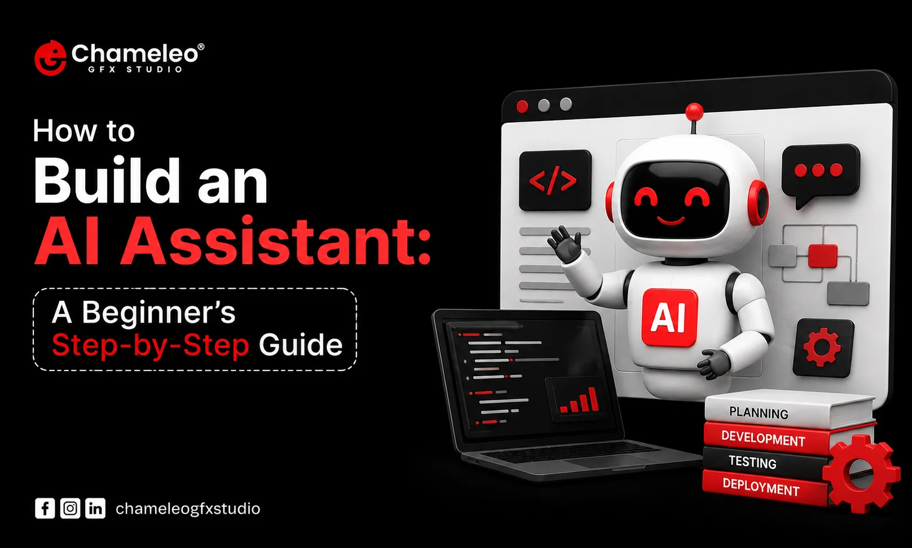

How to Build an AI Assistant: A Beginner's Step-by-Step Guide

Most people who want to build an AI assistant start with the same question: where do I even begin? Between LLM APIs, prompt engineering, memory systems, and endless YouTube tutorials, it's easy to feel stuck before writing a single line of code. This guide skips the hype and walks through what actually matters when you're building one for the first time.
Table of Contents
What Is an AI Assistant?
An AI assistant is software that uses a large language model to understand user input and respond in a way that feels helpful and conversational. Unlike a basic chatbot that follows rigid decision trees, an AI-powered assistant can interpret intent, hold context across a conversation, and often take action through connected tools.
Think of a customer support assistant that doesn't just answer FAQs but can actually check an order status by calling your logistics API. That's the practical difference. A chatbot answers; an AI agent can also act.
What Do You Need Before Building an AI Assistant?
Before touching any code, you need three things: a clear use case, access to an LLM (through OpenAI, Anthropic, Google, or Microsoft Azure AI), and a rough idea of what data or tools the assistant needs to access. You don't need to be an expert programmer. Many beginners start with Python because of its readability and strong ecosystem of AI libraries.
You'll also want a testing mindset from day one. AI assistant development isn't a one-time build; it's closer to raising something that keeps needing correction.
How to Build an AI Assistant From Scratch?
1. Define the Assistant's Purpose
This is the step most beginners rush. A narrow, well-defined task like "answer questions about our return policy" works far better than "help users with anything." General-purpose assistants sound impressive but are harder to test, harder to trust, and more likely to produce vague or incorrect answers.
2. Choose the LLM or AI Model
Don't pick a model just because it's trending. Consider reliability, cost per token, response latency, and whether it supports the context length your use case needs. OpenAI's documentation, Anthropic's Claude documentation, and Google's AI documentation all publish benchmarks and guidance that help with this comparison. A smaller, faster model is often the better choice for simple tasks; save the heavyweight models for complex reasoning.
3. Design the Conversation Flow
Map out the likely paths a user will take. What happens if they ask something outside scope? What's the fallback response when the assistant genuinely doesn't know the answer? A good assistant admits uncertainty instead of guessing.
4. Connect APIs and External Tools
This is where an assistant becomes an agent. Connecting a weather API, a CRM, or an internal database lets the assistant fetch real data instead of relying purely on the model's training knowledge. Keep permissions limited here. An assistant that can read order data doesn't need permission to delete records.
5. Add Context or Memory Where Necessary
Memory lets an assistant remember earlier parts of a conversation or previous interactions with a user. Not every assistant needs long-term memory. A simple FAQ bot doesn't; a personal AI assistant that tracks ongoing tasks probably does. Adding memory you don't need adds complexity and privacy risk without real benefit.
6. Add Instructions and Business Rules
System prompts and guardrails tell the assistant how to behave, what tone to use, and what topics to avoid. This is also where you define escalation rules, like handing off to a human when confidence is low.
7. Test Real User Scenarios
Scripted test cases only get you so far. Real conversations are messier, and they reveal edge cases scripts never anticipate. Whenever possible, test with actual users or realistic sample queries before launch.
8. Monitor, Improve, and Maintain the Assistant
Once live, review conversation logs regularly. Models drift, user needs change, and new failure patterns emerge. Treat this as ongoing maintenance, not a finished project.
Build a Custom AI Assistant for Your Business
Off-the-shelf chatbot tools work fine for basic FAQs, but businesses with specific workflows, proprietary data, or compliance needs usually benefit from a custom AI assistant built around their actual processes. A law firm needing document review support has very different requirements than an e-commerce brand automating order tracking.
This is where professional AI assistant development services make a practical difference. Building internally without prior experience often leads to months of trial and error, security oversights, and poorly scoped projects. A team that specializes in AI assistant architecture can shorten that learning curve considerably.
For businesses based in Gujarat, working with an AI assistant development agency in Ahmedabad offers advantages beyond convenience. Local teams understand regional business context, communicate in real time without timezone friction, and can provide ongoing support after launch. Chameleo GFX Studio works with businesses that need this kind of hands-on, collaborative approach to AI assistant development, from initial scoping through deployment and refinement.
Common Mistakes Beginners Should Avoid
Building before defining the use case wastes time and produces unfocused results. Choosing a model based only on popularity ignores cost and latency tradeoffs that matter in production. Ignoring hallucinations, meaning the model generating confident but incorrect answers, can seriously damage user trust. Giving the assistant excessive permissions creates unnecessary security risk; follow the principle of least privilege outlined in resources like the OWASP security guidelines. Skipping testing until launch day almost always backfires. Ignoring privacy, especially around user data and conversation logs, can create compliance problems later. And trying to automate everything immediately, instead of starting with one task, usually results in an assistant that does many things poorly.
Key Takeaways
- An AI assistant differs from a chatbot mainly through its ability to understand context and take action via connected tools.
- Model selection should prioritize reliability, cost, and latency over popularity.
- Real conversations reveal more testing insights than scripted scenarios alone.
- Limiting tool permissions and monitoring for hallucinations protects both users and your business.
- Custom AI assistant development makes sense once your use case outgrows generic chatbot templates.
Frequently Asked Questions
Conclusion
Building an AI assistant isn't about chasing the latest model or copying someone else's chatbot. It's about solving one real problem well, testing honestly, and expanding carefully from there. Whether you're experimenting solo or planning a business-grade solution, the fundamentals covered here apply either way.
Ready to build a custom AI assistant for your business? Talk to Chameleo GFX Studio to discuss your idea and explore the right development approach.